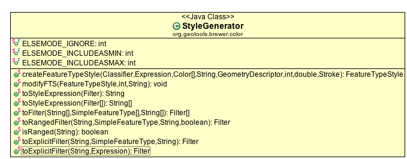
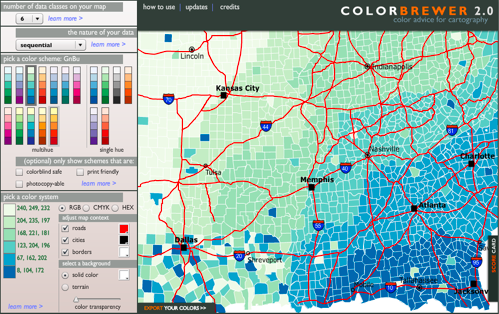
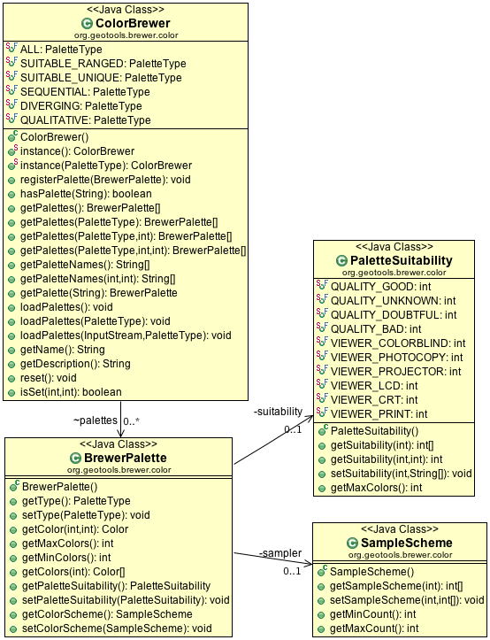

ColorBrewer¶
The combination of ColorBrewer and StyleGenerator can be used to generate a FeatureTypeStyle according to your instruction.
StyleGenerator¶
The class that does the work is called StyleGenerator.
StyleGenerator takes a Color[] (either from ColorBrewer or provided by you!) and will create a Style containing a Rule for entry indicated by a Classifier.
FeatureTypeStyle style = StyleGenerator.createFeatureTypeStyle( groups, propteryExpression, colors, "Generated FeatureTypeStyle for GreeBlue", featureCollection.getSchema().getGeometryDescriptor(), StyleGenerator.ELSEMODE_IGNORE, 0.95, null);
ColorBrewer¶
The colorbrewer project defines a “good” set of palettes backed a description of how appropriate each set of colours is for different uses (grayscale printing, display with a projector, friendly to color a blind audience or all three!).
Website¶
To start with open up http://colorbrewer2.org/ in your browser and check out what is available using the interactive tools.
Note
The website (c) Cynthia Brewer, Mark Harrower and The Pennsylvania State University.
You can use this website site to visually explore the palettes: as an example the green blue even spread shown above is called “GrBu”.
We will refer to “GrBu” in the code examples below.
ColorBrewer¶
The ColorBrewer class is a straightforward representation of the information on the above website. There are classes to represent each palette along with information on suitability and the number of samples that are able to be represented.
The palettes used for these styles are defined by the colorbrewer project and are defined with a range of metadata allowing you to select an appropriate palette for different uses (grayscale printing, display with a projector, friendly to color a blind audience or all three!).
Create ColorBrewer (it will load the built-in palettes).
ColorBrewer brewer = ColorBrewer.instance();
You can then look up palettes using the provided constants. Each entry has a number palettes available depending on the number of classes you are trying to represent.
String paletteName = "GrBu"; Color[] colors = brewer.getPalette(paletteName).getColors(5);
Example¶
Here is a complete example showing the steps required to generate a FeatureTypeStyle with a predefined palette for the provided SimpleFeatureCollection.
// STEP 0 Set up Color Brewer ColorBrewer brewer = ColorBrewer.instance(); // STEP 1 - call a classifier function to summarise your content FilterFactory2 ff = CommonFactoryFinder.getFilterFactory2(); PropertyName propteryExpression = ff.property("height"); // classify into five categories Function classify = ff.function("Quantile", propteryExpression, ff.literal(5)); Classifier groups = (Classifier) classify.evaluate(featureCollection); // STEP 2 - look up a predefined palette from color brewer String paletteName = "GrBu"; Color[] colors = brewer.getPalette(paletteName).getColors(5); // STEP 3 - ask StyleGenerator to make a set of rules for the Classifier // assigning features the correct color based on height FeatureTypeStyle style = StyleGenerator.createFeatureTypeStyle( groups, propteryExpression, colors, "Generated FeatureTypeStyle for GreeBlue", featureCollection.getSchema().getGeometryDescriptor(), StyleGenerator.ELSEMODE_IGNORE, 0.95, null);